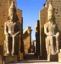

| |
- Борухович В. Г., Александрийская культура книги. Ч. 1
(гл. из Борухович В. Г., В мире античных свитков. Фрагмент взят из Ильинская Л. С., Древняя Греция. История. Быт. Культура. Из книг современных ученых.)
- Борухович В. Г., Античная книга-свиток
(Борухович В. Г., В мире античных свитков. Фрагмент взят из Ильинская Л. С., Древняя Греция. История. Быт. Культура. Из книг современных ученых.)
- Борухович В. Г., Восковые таблички
(Борухович В. Г., В мире античных свитков. Фрагмент взят из Ильинская Л. С., Древняя Греция. История. Быт. Культура. Из книг современных ученых.)
- Борухович В. Г., Папирус
(Борухович В. Г., В мире античных свитков. Фрагмент взят из Ильинская Л. С., Древняя Греция. История. Быт. Культура. Из книг современных ученых.)
- Доватур А. И., Цены на рабов
(Доватур А. И., Цены на рабов. Фрагмент взят из Ильинская Л. С., Древняя Греция. История. Быт. Культура. Из книг современных ученых.)
- Матье М. Э., Исчезнувший город, /из книги Матье М. Э., Во времена Нефертити/, Л.–М., «Искусство», 1965 г.
- Матье М. Э., «Любящие истину», /из книги Матье М. Э., Во времена Нефертити/, Л.–М., «Искусство», 1965 г.
- Матье М. Э., Город Атона, /из книги Матье М. Э., Во времена Нефертити/, Л.–М., «Искусство», 1965 г.
- Томсинов В. А., Хронология истории Древнего Египта (гл. 12 из Томсинов В. А., Краткая история египтологии).
- Шишова А. И., Воззрения древних греков на порабощение эллинов (Из книги Д. П. Каллистова, А. А. Нейхардт, И. Ш. Шифмана, И. А. Шишовой«Рабство на периферии античного мира». Л., 1968, по книге: Древняя Греция. История. Быт. Культура. Из книг современных ученых. (составитель Ильинская Л. С.), /сб./, М., 1997.).
- Эмери У. Б., «Цивилизация фараонов» Древнего Египта (Из книги Эмери У. Б. «Архаический Египет», гл. Объединение / Пер с англ. Н. Н. Каменской и А. С. Четвертухина (Серия: «Александрийская библиотека»). СПб.: Журнал «Нева»; ИТД «Летний Сад». 2001.)
- Смирницкая О. А. , «Поэтическое искусство англосаксов (Из книги «Древнеанглийская поэзия»/М., «Наука», 1982 г.
|
 |